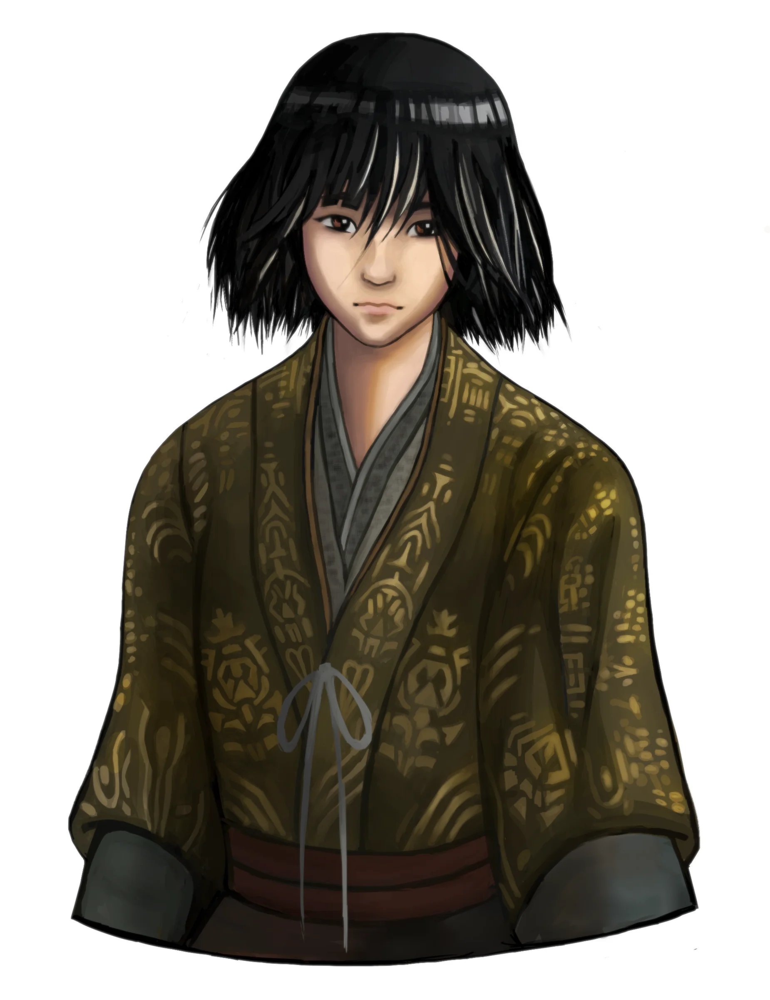

- Sekiro: Shadows Die Twice se passa no final do período Sengoku, uma era de constantes conflitos no Japão feudal. Você assume o papel de Wolf, um shinobi em busca de vingança após ter falhado em proteger seu mestre, o Jovem Lorde Kuro.

- Após perder o braço em uma batalha contra o poderoso Genichiro Ashina, Wolf é resgatado por um misterioso escultor e recebe um braço protético, iniciando sua jornada por redenção. O protagonista descobre que Kuro possui um Sangue Divino, que concede imortalidade — algo cobiçado por muitos.
- A missão de Wolf se torna mais do que proteger seu mestre: ele deve quebrar o ciclo de imortalidade que ameaça destruir tudo ao seu redor. Sua jornada envolve confrontar guerreiros lendários, criaturas sobrenaturais e tomar decisões que afetam o destino de todos.
Desenvolvido Por - Kaio Ferreira RA: 5160517
=======- Sekiro: Shadows Die Twice se passa no final do período Sengoku, uma era de constantes conflitos no Japão feudal. Você assume o papel de Wolf, um shinobi em busca de vingança após ter falhado em proteger seu mestre, o Jovem Lorde Kuro.
- Após perder o braço em uma batalha contra o poderoso Genichiro Ashina, Wolf é resgatado por um misterioso escultor e recebe um braço protético, iniciando sua jornada por redenção. O protagonista descobre que Kuro possui um Sangue Divino, que concede imortalidade — algo cobiçado por muitos.
- A missão de Wolf se torna mais do que proteger seu mestre: ele deve quebrar o ciclo de imortalidade que ameaça destruir tudo ao seu redor. Sua jornada envolve confrontar guerreiros lendários, criaturas sobrenaturais e tomar decisões que afetam o destino de todos.
Desenvolvido Por - Kaio Ferreira RA: 5160517
>>>>>>> 3de217bb298735213fb927f1747a25fbc4abbb77